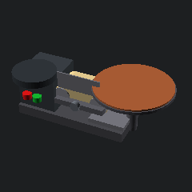

MODULE 01
認識砂磨機
點擊圖中紫色標記，認識每個部件的功能。
已認識 0 / 8 個部件
點擊紫色數字
8 個部件都認完才能進下一關
🔭 寫實 3D 模型 旋轉 · 縮放
拖曳可旋轉、滾輪縮放，從各角度認識砂磨機的外觀構造。（AI 生成示意模型，僅供認識外形）
🖥️ 3D 模型檢視
OpenSCAD 繪製的帶盤式砂磨機模型，左側橫向砂帶、右側直立砂盤，含靠尺與集塵口。

🖥️ 模型由 OpenSCAD 參數化建模繪製
生活科技互動教學平台
點擊圖中紫色標記，認識每個部件的功能。
點擊紫色數字
8 個部件都認完才能進下一關
拖曳可旋轉、滾輪縮放，從各角度認識砂磨機的外觀構造。（AI 生成示意模型，僅供認識外形）
OpenSCAD 繪製的帶盤式砂磨機模型，左側橫向砂帶、右側直立砂盤，含靠尺與集塵口。

🖥️ 模型由 OpenSCAD 參數化建模繪製